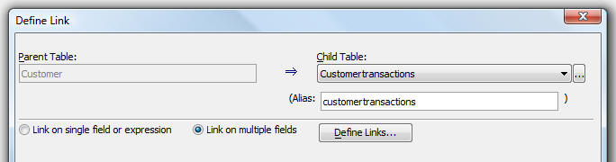
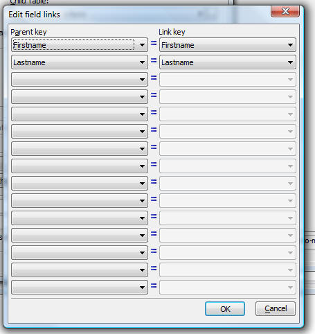

Sets - Linking on Multiple Fields
When you create a set, Alpha Anywhere now allows you to specify that the link is based on multiple field.
Previously, you could only base the link on a single field, or an expression. However, if you based the link on an expression (e.g. alltrim(lastname) + alltrim(firstname)), you could not enter new records because Alpha Anywhere had no way of knowing how to decode the expression to fill in the individual linking fields.
Now, it is easy to link tables on multiple fields. For example, assume that you had a 'customer' table with 'lastname' and 'firstname' fields, and a 'customer_transaction' table, which also had a 'lastname' and 'firstname' field. You can now link these tables on the 'lastname' and 'firstname' fields.
When you add or edit a link in the Set editor, the Define Link dialog now has a radio button that allows you to specify if the link is based on a single field or expression, or is based on multiple field.
If you select the 'Link on multiple fields' option, the 'Define Links...' button is enabled.

When you click the 'Define Links...' button, the following dialog is displayed, where you can define the links.
